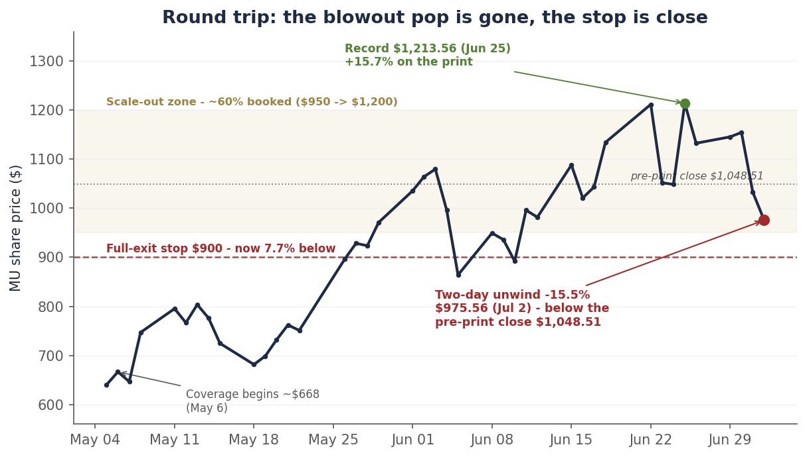
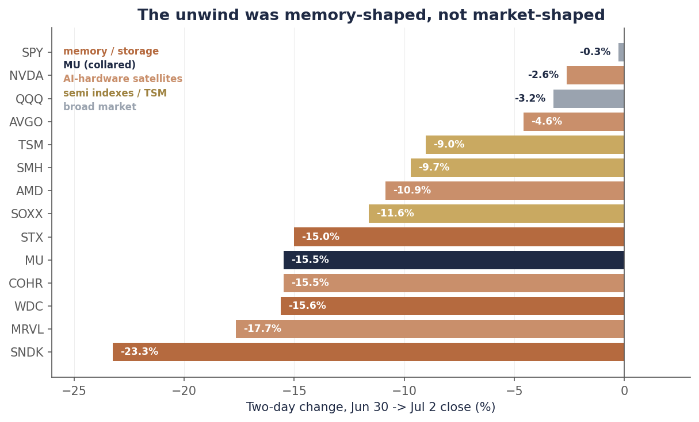
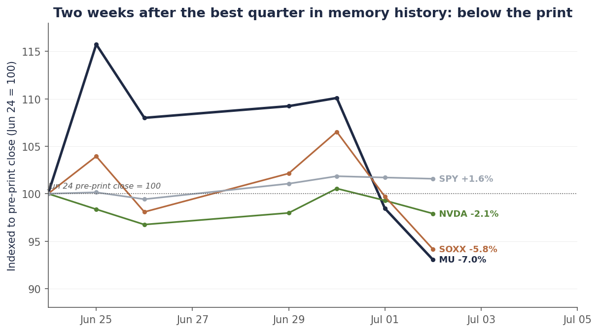

Single-name update · Memory · The unwind
Micron round-tripped the best quarter in its history. What the unwind is — and isn’t.
Eight days ago Micron printed $41.46B in revenue and guided to $50B, and the stock closed at a record $1,213.56. Today it closed at $975.56 — down 15.5% in two sessions, down 19.6% from the record, and 7% below the close the night before the report. The market has fully repossessed the pop from the best quarter in memory history, and our $900 full-exit stop is now 7.7% away.
Here is what the unwind is not: it is not macro, and it is not a Micron earnings event. The June jobs report came in soft — 57K against a ~110K consensus — rate-hike odds cooled, and the S&P closed flat. Nvidia fell 2.6% over the same two days. What got hit was memory, storage, and the AI-hardware satellites: SanDisk −23%, Marvell −18%, Western Digital −16%, Micron and Coherent −15.5%, Seagate −15%. The unwind was memory-shaped, not market-shaped.
What it is: a positioning and flow event with a real fundamental kernel. Korean retail leverage is unwinding, SK Hynix lists on Nasdaq on July 10 and takes Micron’s only-US-memory-proxy scarcity premium with it, and the rate of DRAM price increases — the second derivative that powered the run — already turned in the company’s own guidance. We hold the runner behind the pre-committed $900 stop, we do not add, and we re-rate the base target from ~$1,500 to ~$1,300 — a multiple cut, not an earnings cut, and we narrate it below. If the stop fires, the whole call — top to bottom — still locks in roughly +50%.
Chart 1 — The round trip
From a ~$668 coverage start to a $1,213.56 record to $975.56 — below where the stock closed before its own blowout.

Daily closes, May 5–July 2, 2026. The record $1,213.56 came June 25, the day after the FQ3 print. The stock rebuilt to $1,154.29 by June 30, then fell 10.6% on July 1 and 5.5% on July 2 to $975.56 — 7.0% below the June 24 pre-print close of $1,048.51. We hold the ~40% residual behind a $900 closing stop. Source: closing prices via the bpleon price feed.
What actually happened
Start with what did not cause this. Thursday morning the June jobs report printed 57,000 — well under the ~110,000 consensus, with May revised down to 129,000. The unemployment rate fell to 4.2% for the wrong reason (participation dropped to 61.5%, the lowest since March 2021), wages rose 3.5% year over year, and the 2-year yield fell about 3.5 basis points to roughly 4.13% as September-hike odds came in. That is the first labor read under the Warsh Fed, and it broke dovish. The S&P closed the day essentially flat and is up 1.6% since Micron’s print-eve. If this were a macro event, the whole tape would wear it.
Instead, the damage has a precise shape. Over Wednesday and Thursday: SanDisk −23.3%, Marvell −17.7%, Western Digital −15.6%, Micron −15.5%, Coherent −15.5%, Seagate −15.0%. One ring out: AMD −10.9%, TSMC −9.0%, the SOXX semiconductor index −11.6%. And then the tell: Nvidia −2.6%, Broadcom −4.6%, the Nasdaq 100 −3.2%, the S&P −0.3%. The market did not sell AI. It sold memory and the things priced like memory — hardest where the year-to-date gains and the retail leverage were largest.
Chart 2 — The shape of the damage
Two days, ranked: memory and storage crushed, the GPU complex barely touched, the index flat.

Two-day change in closing prices, June 30 → July 2, 2026. Memory/storage names in terracotta, Micron in navy, AI-hardware satellites in light terracotta, semiconductor indexes and TSMC in gold, broad-market ETFs in grey. Source: closing prices via the bpleon price feed.
Note who is missing from the casualty list. Nvidia — whose accelerators are the demand pull for high-bandwidth memory in the first place — lost 2.6% in two days. If the market were repricing AI demand, the company selling every accelerator it can make would not be flat. The market is repricing memory pricing power and memory positioning, not the buildout.
The catalysts: leverage, a listing, and the second derivative
First, the flow story — and it starts in Korea. In late May, Korea’s Financial Supervisory Service approved sixteen single-stock 2× leveraged ETFs tracking Samsung and SK Hynix. In a few weeks they ballooned past $9 billion, held overwhelmingly by retail momentum money. The FSS governor, Lee Chan-jin, has since said publicly that he wishes he had blocked them — his words: high-risk products. Leverage like that amplifies in both directions; when Korean memory names wobbled this week, the forced de-grossing spilled into every memory proxy on earth, and the biggest, most crowded one trades on Nasdaq under the ticker MU.
Second, the listing. On July 10, SK Hynix — a company now valued above $1 trillion with roughly 60% of the high-bandwidth-memory market — begins trading ADRs on Nasdaq. Until now, a US fund that wanted pure memory exposure had exactly one liquid domestic choice: Micron. That scarcity was worth a premium in the multiple, and it dies next week. Some of the money that crowded into MU as “the only way to play memory in America” is rotating out ahead of the alternative — you can see it in the tape before the listing even happens.
Third, the fundamental kernel: the second derivative turned before the tape did. TrendForce had conventional DRAM contract prices up 90–95% quarter-over-quarter in Q1; its Q2 projection is +58–63%. Still extraordinary — but decelerating. Micron’s own CFO said it on the June 24 call: expect “meaningful moderation in the rate of price increases,” with gross margins capped near ~86% and growth from here driven by volume, not price. And the cost side is starting to bite the demand base: IDC now forecasts 2026 smartphone volumes down 13%, the largest decline on record, as memory prices squeeze the bill of materials. Momentum money does not wait for the cycle to end; it leaves when the rate of improvement peaks. That is what the guidance described, and this week the price finally listened.
Scoring our own work
The June 28 note said the things that mattered: that from $1,132 Micron was “no longer a variant-view bet” but a two-way stock; that a big chunk of the blowout was conventional DRAM pricing that “will mean-revert”; that the cycle still ends and this is “a stock to own with an exit calendar, not forever”; and that the right stance was hold, don’t add, with no options into rich vol. All of that aged well inside a week. We also wrote that the math from here was “roughly +30% to the base against −20% to the stop” — asymmetric but no longer lopsided. The −20% leg then showed up in six sessions. Writing a risk down does not make it arrive slower.
Now the miss, named precisely: the SK Hynix listing was in our research file on June 25 — flagged, in writing, as a near-term rotation-out-of-MU risk — and we left it out of the published kill-shot list. The kill-shots we published were fundamental (HBM pricing, contract terms, hyperscaler capex). The thing that actually hit first was a flow risk we had already identified and filed under “context.” Lesson logged: if a risk is real enough to write in the research file, it is real enough to publish, and flow risks belong on the same list as fundamental ones — the market does not care which category takes your stop out.
Chart 3 — The fork since the print
Since print-eve: the S&P is up 1.6%, Nvidia is flat — and Micron is 7% below its own blowout.

Closing prices indexed to the June 24, 2026 pre-print close (=100), through July 2. MU finished at 93.0 — two weeks after reporting the strongest quarter in memory-industry history. Source: closing prices via the bpleon price feed.
What the Street is thinking — and what it might not be
Here is the uncomfortable snapshot: the sell-side came into this crash at maximum conviction. As of July 1, 39 of 41 covering analysts rated Micron a Buy or Strong Buy. Cantor Fitzgerald set a $2,000 target on June 29 — two days before the unwind. Through today’s close there is not a single downgrade or price-target cut on the tape. The loudest research view on the way down was the same as on the way up: buy the dip. Meanwhile the first strategist warnings about crowding in AI names started circulating this week. When 95% of the crowd already agrees the stock is a Buy, ratings can’t go up — only positioning can come down. Three things the consensus is underweighting:
- The market just priced Micron as if the collar doesn’t exist. Over two days, Micron fell 15.5% — the same as Western Digital (−15.6%) and Seagate (−15.0%), and within sight of SanDisk (−23.3%). Those are spot-exposed names with no contracted floor. Micron has 16 strategic customer agreements covering ~$100 billion of take-or-pay revenue, ~$22 billion of customer cash on deposit, and — management’s words from the June 24 call — “at the floor price, our profitability levels are higher than peak margins at any time in the past.” Customers who prepaid $22 billion do not walk. If the collar is real — and it is contractual — Micron’s downside earnings distribution is truncated in a way its comps’ simply are not, and an indiscriminate memory-basket liquidation eventually has to notice the difference.
- Flow is not fundamentals — but the scarcity premium really is gone. The Korean 2× ETF unwind and pre-listing rotation are one-time repricings, not earnings events; when forced sellers finish, they stop. The honest part cuts the other way: the piece of Micron’s multiple that existed because it was the only US-listed memory major dies on July 10, permanently. That is a real, durable haircut to fair value — it is just a multiple event, not an earnings event, and it is why our re-rate below cuts the multiple and leaves the earnings alone.
- The deceleration was disclosed on June 24. The $2,000 targets ignored their own inputs. The CFO guided to moderating price increases. Margins were explicitly capped near 86%. TrendForce’s own numbers showed Q2 DRAM pricing gains slowing by a third versus Q1. None of this is new information this week — it was in the same call everyone used to justify $1,500–$2,000 targets. The cycle end is not here: management still sees tightness “beyond 2027,” only gradual supply improvement in 2028, and no line of sight to a catch-up. But a market paying peak multiples on peak second-derivative momentum does not need the cycle to end — it only needs the acceleration to stop. It stopped.
The re-rate, honestly: ~$1,500 becomes ~$1,300
Every change gets a story; here is this one’s. Our June 28 base case was ~$1,500, built as roughly 12.5× FY27 EPS of $120–130 — a multiple we defended because the contract collar makes Micron structurally less cyclical, plus, implicitly, a scarcity premium for the only US-listed memory major. The trigger for the change is the July 10 SK Hynix listing: the scarcity leg of that multiple dies next week, permanently, and pretending otherwise would be marking the book to a market that no longer exists. We are cutting the multiple to ~11× — a recovery multiple with collar credit but no scarcity premium — and leaving the earnings inputs alone, because nothing that happened this week touches FY27 earnings power: the SCAs are signed, the deposits are banked, HBM4 is shipping, and the FQ4 guide still annualizes to roughly $124 of EPS. ~11× on ~$120 puts the base near $1,320 — call it ~$1,300.
The honest sensitivity, so the range is visible instead of implied:
| FY27 EPS scenario | 9× (de-rated cyclical) | 11× (recovery, no scarcity) | 12.5× (full collar credit) |
|---|---|---|---|
| ~$100 — supply answers early, spot rolls | $900 | $1,100 | $1,250 |
| ~$120 — base: collar holds, HBM ramps | $1,080 | $1,320 | $1,500 |
| ~$130 — tight through 2027, HBM4 pricing holds | $1,170 | $1,430 | $1,625 |
Read the top-left cell. Nine times a hundred dollars is $900 — the bear-case fair value lands exactly on the stop we set weeks ago. That is not numerology; it is why the stop was set there. Below $900 the market is pricing the early-supply-normalization world, and in that world we do not want to argue — we want to be out and re-underwrite from the sidelines. At today’s $975.56 the stock trades at roughly 8.1× the base FY27 number. The bull cells need the late-July hyperscaler capex prints to confirm; we will not pay forward for them.
The position, and the playbook from $975
What we are doing is what we pre-committed to do, which is the point of pre-committing. The residual ~40% of the position is held behind a single line: a close below $900 and we are fully out, no re-underwriting mid-drawdown, no averaging down, no moving the stop. We are not adding — the June 28 note said “hold, not an add” at $1,132, and nothing about a flow-driven crash into a competitor’s listing makes us want to catch it at $975 before the July 10 flows and the late-July capex prints clear. And we are not selling here either: dumping a runner 7.7% above a pre-committed line, after the flush, on a day the S&P was flat, is how disciplined positions get converted into emotional ones.
The scenarios, with weights: Base, ~50% — the stock chops between the stop and ~$1,150 while the SK Hynix listing clears and the market waits for Microsoft, Meta, Alphabet, and Amazon to report capex July 22–31; those prints confirm and the re-rate toward ~$1,300 gets underwritten by demand, not momentum. Bear, ~30% — the listing flows and Korean unwind overshoot, $900 closes, and the stop fires. Then the arithmetic of discipline: entry $668, roughly 60% booked across $950–$1,200 (average ~$1,100, +65%), the last 40% out at $900 (+35%) — a blended ~+53% on the whole call, top to bottom, in the worst case. Bull, ~20% — capex prints run hot, HBM4 pricing holds, and the recovery resumes with the $1,500-cell math back in play; we re-arm trims near $1,400 and above.
| Item | Status |
|---|---|
| As of | July 2, 2026 close |
| Rating | HOLD the residual — stepped down from June 28’s BUY-with-trim-discipline; same trigger as the PT cut (the scarcity premium dies July 10), same review point (the late-July capex prints) |
| Last price | $975.56 (−10.6% Jul 1, −5.5% Jul 2; −19.6% from the Jun 25 record) |
| Vs. pre-print | 7.0% below the June 24 close of $1,048.51 — the pop is fully repossessed |
| Base PT | ~$1,300 (down from ~$1,500; multiple cut for the scarcity premium, earnings unchanged) |
| Bull / Bear PT | ~$1,500–1,625 (needs capex prints + HBM4 hold) / ~$900 (early supply normalization) |
| Position | ~60% booked $950–$1,200; holding the ~40% residual (15 shares) |
| Stop | Close below $900 = full exit — 7.7% below; worst case locks ~+53% blended on the call |
| Do not | Add before July 10 listing + late-July capex prints; sell above the stop; touch options (vol is rich) |
| Watch next | SK Hynix ADR debut July 10; hyperscaler capex July 22–31; TrendForce Q3 contract prints; any SCA-term news |
| Kill-shots (updated) | HBM ASP softness; SCA terms below spot; hyperscaler capex cut; + flow: listing-driven de-rating that breaks $900 on a close |
The referee has not changed: the late-July hyperscaler capital-expenditure prints are the demand-side confirmation for the entire AI-infrastructure complex — Micron’s $100 billion of supply-side contracts included. If that capex confirms, this week was the flow flush that reset positioning for the next leg. If it cuts, the $900 line will have already done its job. Either way, the plan was written before the drawdown — which is the only time plans are worth anything.
Disclosure: I/we have a beneficial long position in the shares of MU through stock ownership. The position has been reduced by roughly 60% through a disciplined scale-out into the June rally; a residual is retained behind a stop, as described above. I wrote this article myself, and it expresses my own opinions. I am not receiving compensation for it. I have no business relationship with any company whose stock is mentioned. This is research and analysis only, not personalized financial advice. This commentary is for informational and educational purposes only and does not constitute investment, tax, or legal advice or a solicitation to buy or sell any security. Past performance is not indicative of future results. Readers should conduct their own research and consult a qualified financial professional before making investment decisions. Sources include Micron’s FQ3 2026 8-K and earnings-call transcript, the BLS June employment report via CNBC/FXStreet, TrendForce and IDC industry data, Benzinga/MarketBeat analyst-rating data, reporting on the SK Hynix Nasdaq listing and Korean leveraged ETFs via Yahoo Finance/Motley Fool, and the bpleon price feed. See disclaimer.